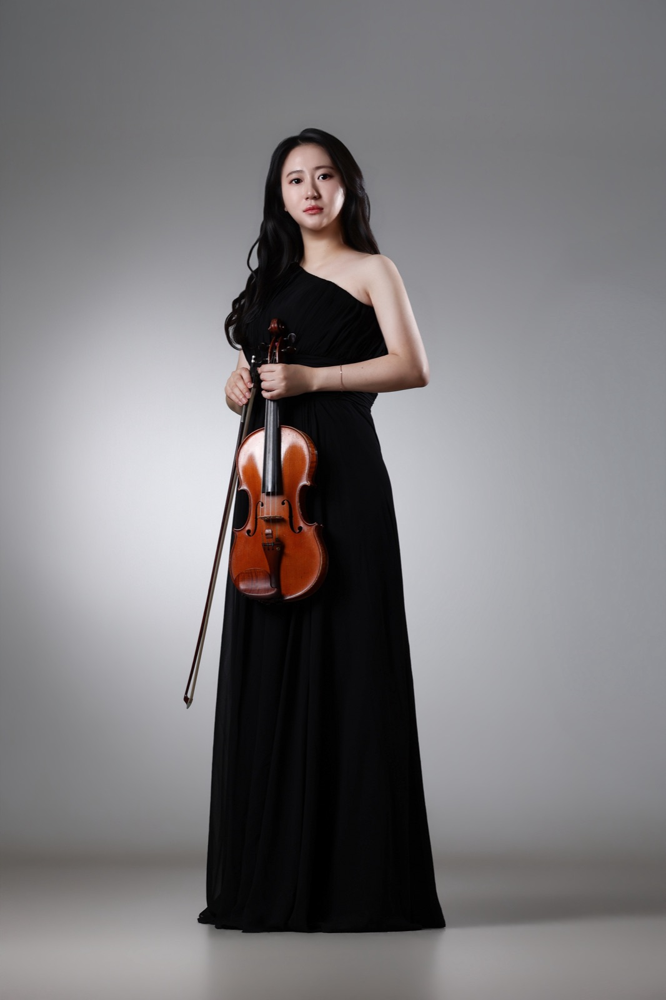
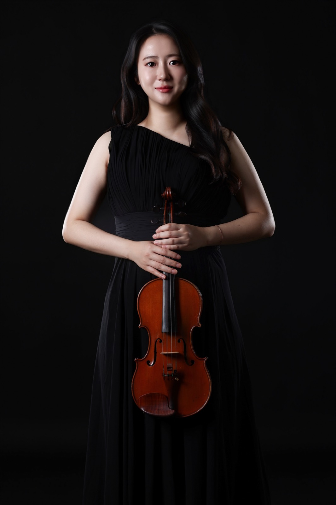
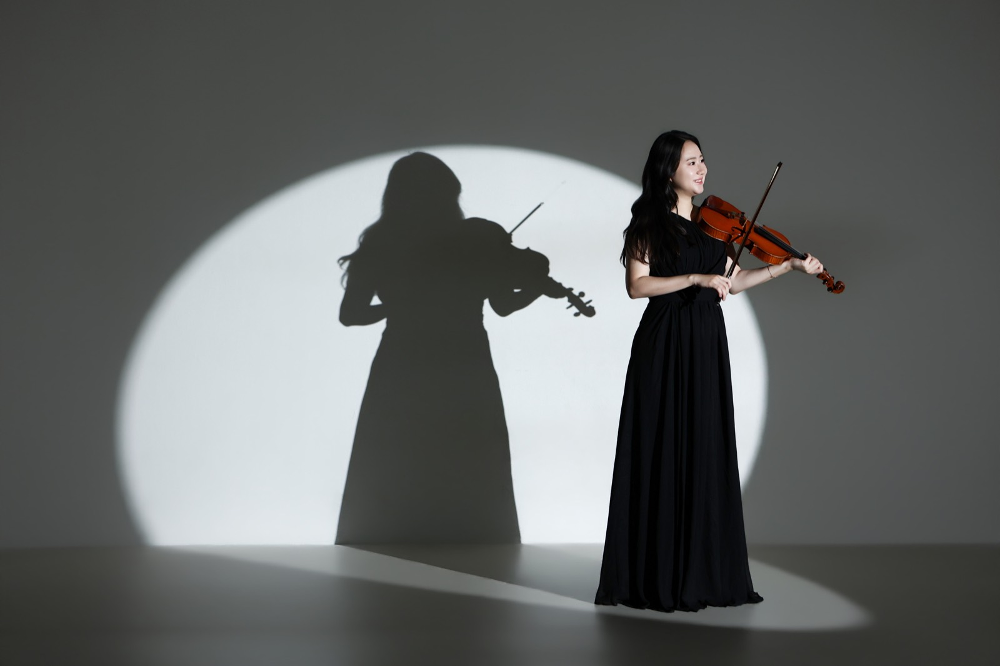
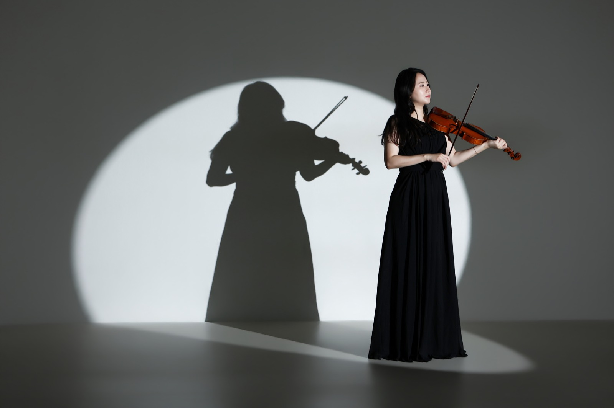
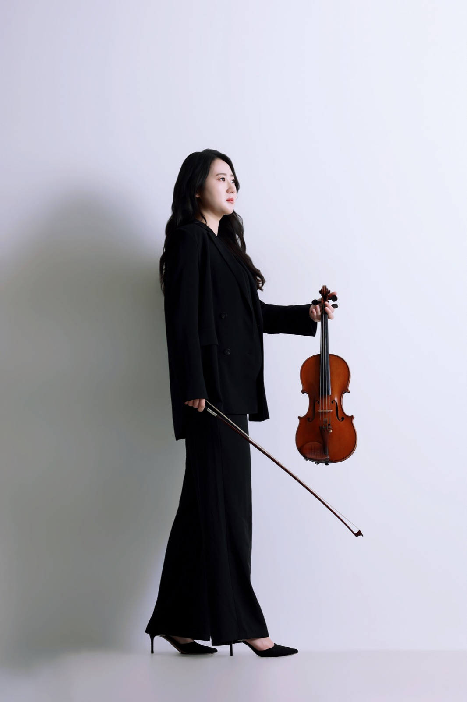

Click to Enter

V I O L I N I S T
방 미 가
Scroll
무대 위의 빛은 언제나 연주자를 향합니다.
독일과 한국을 오가며 쌓아온 20년 이상의 무대 경험으로,
바이올리니스트 MIGA BANG은 오늘도 그 빛 안에 섭니다.

종신 정단원 역임
계약단원 역임
Akademie 단원 역임
Akademie 단원 역임
객원 역임
부수석 역임
객원단원 역임
2026년, 아티스트포룸 오케스트라 & 베를린 심포니커와 함께
1바이올린 수석으로 베를린필하모닉 홀에서 연주했습니다.
전공생 레슨 전문
선화예중·예고, 독일 국립음대 학·석사, 그리고 독일 오케스트라 종신 정단원까지.
엘리트 과정을 직접 밟아온 연주자가, 같은 길을 준비하는 학생을 가르칩니다.
독일 국립음대 학·석사Dresden Diplom
Düsseldorf Solo Master
최우수 졸업
독일 오케스트라 종신 정단원Südwestfalen Philharmonie
2026 베를린필하모닉 홀
1바이올린 수석
전공생 레슨 전문전공을 준비하거나 전공 중인 학생
여수 · 순천 · 광양
010.5830.8039레슨 문의
아티스트포룸 오케스트라, 베를린 심포니커와 함께 1바이올린 수석으로 베를린필하모닉에서 연주
CBS 음악FM 출연
드레스덴 국제 뮤직 페스티벌 교수진
여수 필하모닉 오케스트라 정기연주회 초청 솔로이스트 협연 (예울마루대극장)
여수 영재육성음악회 초청연주 (예울마루대극장)
여수 예울마루 바이올린 독주회 개최
부암아트홀 영아티스트 초청연주
독일 Chemnitz, Pulsnitz, Lichtenberg, Düsseldorf, Solingen, Remscheid, Siegen 등 솔로 및 실내악 초청연주



여수에서 바이올린 전공생 레슨을 전문으로 진행합니다. 독일 드레스덴 국립음대 Diplom, 뒤셀도르프 국립음대 Solo Master(최우수 졸업)를 마치고 독일 오케스트라 종신 정단원으로 활동했습니다. 순천·광양에서도 오실 수 있으며, 문의는 전화 010.5830.8039로 해 주세요.
MIGA BANG(방미가)은 독일과 한국을 오가며 20년 이상 활동해온 바이올리니스트입니다. Robert Schumann Hochschule Düsseldorf Solo Master 최우수 졸업, 연세대학교 대학원 음악학 석사이며, 2026년 베를린필하모닉 홀에서 1바이올린 수석으로 연주했습니다.
이메일 bmg0304@naver.com으로 협연, 마스터클래스, 세션 연주 문의를 받고 있습니다.
Concorso Internazionale per giovani musicisti G. Campochiaro 2위, Concorso Internazionale di Musica EUTERPE 2위, 콘서트월드 콩쿨 3위, 선화실내악콩쿨 은상을 수상했습니다.